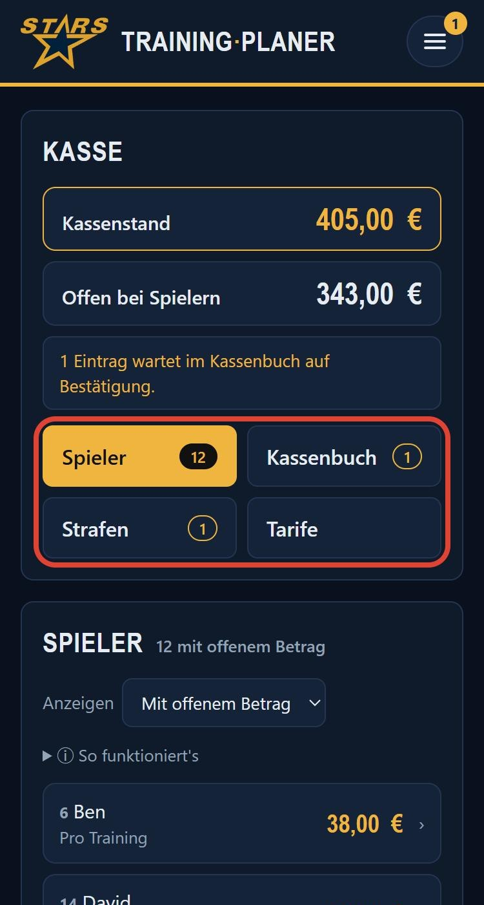
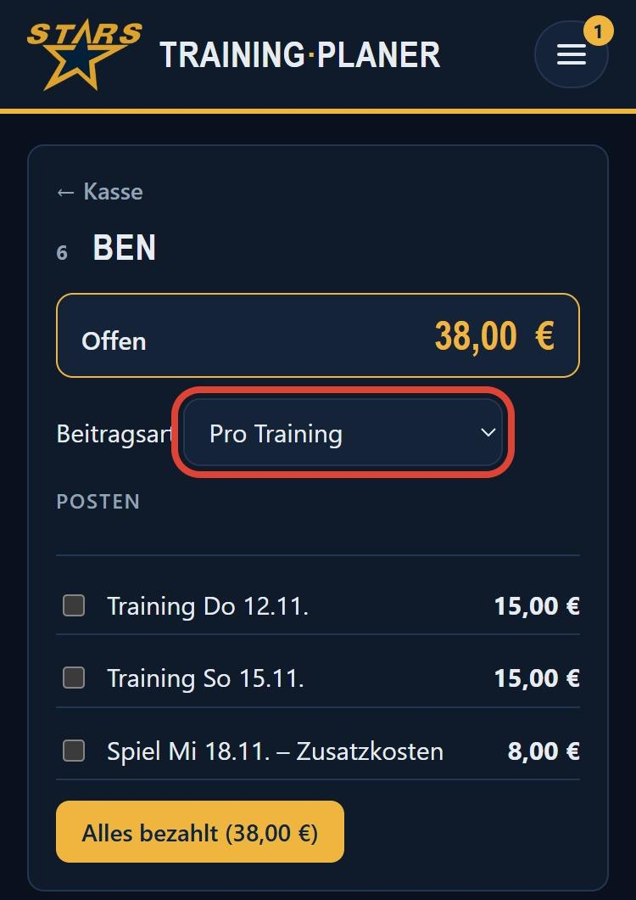
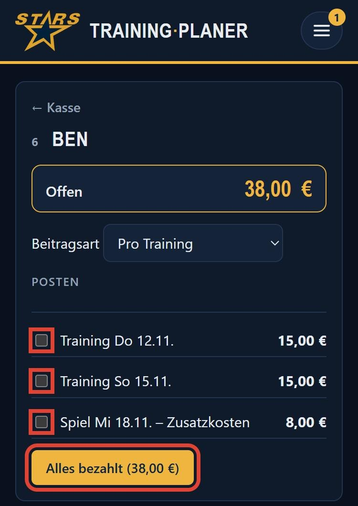
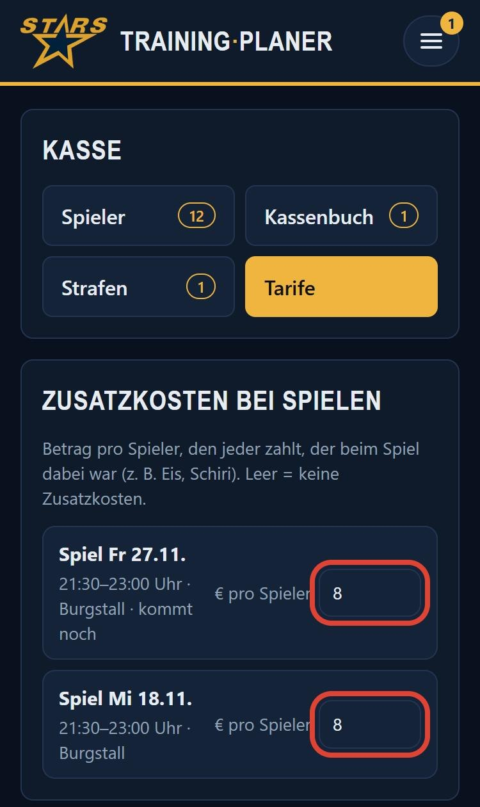
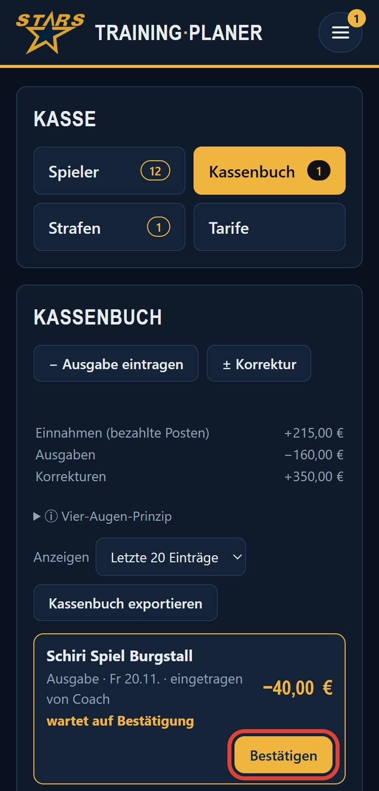
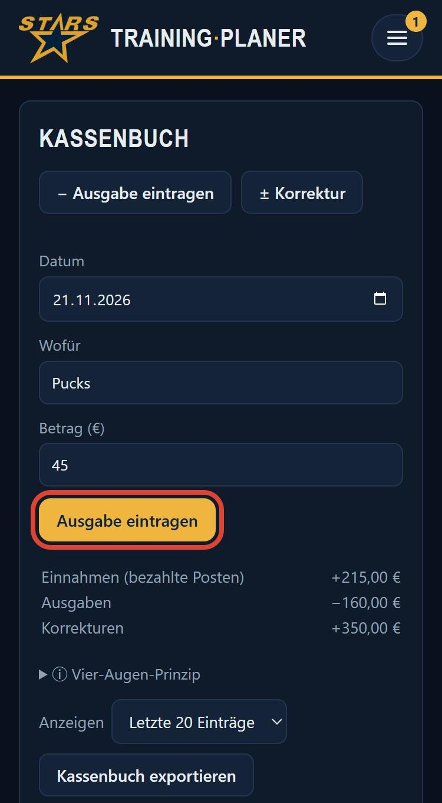
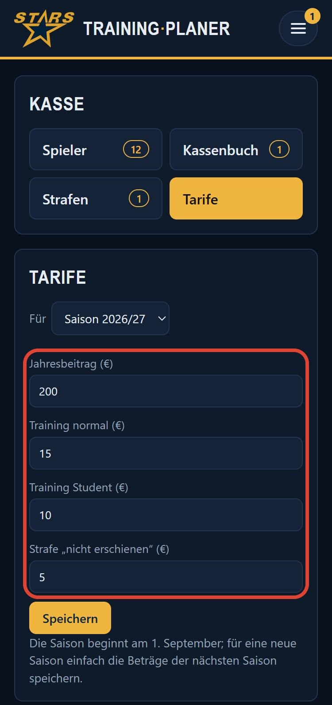

Stars·App für den Kassier
Beiträge, Spesen und Strafen im Blick – und abhaken, wer bezahlt hat
Beiträge, Spesen und Strafen im Blick – und abhaken, wer bezahlt hat

Oben rechts ☰ → Kasse. Den Punkt sehen nur du und die Trainer.
Ganz oben stehen Kassenstand und Offen bei Spielern. Darunter vier große Reiter (rot markiert): Spieler, Kassenbuch, Strafen und Tarife. Eine Zahl am Reiter zeigt, wo etwas offen ist oder auf dich wartet.
| Training | 15 € (Student 10 €) für jedes Training, bei dem der Spieler da war – außer er zahlt Jahresbeitrag |
| Jahresbeitrag | 200 € einmal pro Saison (ab 1. September) – dafür kosten Trainings nichts |
| Zusatzkosten Spiel | der Betrag, den du beim Spiel einträgst – zahlt jeder, der gespielt hat |
| Nicht erschienen | Strafe laut Tarif, wenn der Trainer jemanden als „nicht erschienen“ markiert |
| Strafe | vom Trainer vergeben, mit Grund und Betrag |
Ein Termin wird erst berechnet, wenn er zu Ende ist.

Im Reiter Spieler steht je Spieler eine Zeile mit Beitragsart und offenem Betrag; „Anzeigen“ schaltet zwischen „Mit offenem Betrag“ und „Alle Spieler“ um. Gäste ohne Zugang sind auch dabei. Spieler antippen → seine Seite öffnet sich, dort die Beitragsart wählen (rot markiert).

Aus Versehen angehakt? Einfach den Haken wieder wegnehmen. Der Spieler sieht unter Konto sofort den neuen Stand.

Im Reiter Tarife stehen unter Zusatzkosten bei Spielen die Spiele. Trag ein, was jeder Spieler zahlt (z. B. Eis oder Schiri anteilig) – rot markiert. Leer oder 0 = keine Zusatzkosten.
Das geht auch schon vor dem Spiel („kommt noch“). Nach dem Spiel bekommt jeder, der dabei war, den Betrag als Posten.

Im Reiter Strafen siehst du alle vergebenen Strafen: Spieler, Grund, Datum, wer sie vergeben hat, Betrag und ob offen oder bezahlt.

Ganz oben in der Kasse steht der Kassenstand – so viel Geld sollte in der Kasse sein. Im Reiter Kassenbuch steht, woraus er sich zusammensetzt:
| + Einnahmen | alle als bezahlt abgehakten Posten |
| − Ausgaben | Eisstunden, Schiri, Material … |
| ± Korrekturen | Anfangsbestand, Kassensturz-Differenz |

± Korrektur → Betrag (minus = weniger Geld in der Kasse) und Grund → Korrektur eintragen.

Im Reiter Tarife: Jahresbeitrag, Training normal, Training Student und Strafe „nicht erschienen“ → Speichern.
Neue Saison (ab 1. September): bei Für die nächste Saison wählen, die neuen Beträge eintragen und speichern. Ohne eigene Beträge gelten die der Vorsaison weiter. Bereits gespielte Termine behalten den Betrag ihrer Saison.
Kassenbuch exportieren findest du im Reiter Kassenbuch, die beiden anderen unten im Reiter Spieler:
Die Datei öffnet sich direkt in Excel. Am Handy landet sie im Download-Ordner – für Excel besser am PC exportieren.
| Bei einem Spieler fehlt ein Training | Er war wahrscheinlich als abgesagt eingetragen, oder das Training ist noch nicht zu Ende. Anwesenheit ändern kann der Trainer. |
| Gast zahlt bar | Gäste stehen mit „Gast“ in der Liste – genauso abhaken wie bei allen anderen. |
| Falscher Betrag bei einer Strafe | Trainer bitten, die Strafe zu löschen und neu zu vergeben. |
| „Mit offenem Betrag“ / „Alle Spieler“ | Oben bei „Anzeigen“: nur wer etwas schuldet, oder alle – z. B. um eine Beitragsart einzustellen. |
| Ausgabe falsch eingetragen | Noch nicht bestätigt: löschen und neu eintragen. Schon bestätigt: mit einer Korrektur ausgleichen. |
| Kassenstand ändert sich „von selbst“ | Er rechnet mit den abgehakten Posten. Wird ein Haken entfernt, sinkt er wieder. |
| Wann kommt die Zahlungserinnerung? | Freitags um 12 Uhr, nur an Spieler mit offenem Betrag und eingeschalteten Benachrichtigungen. |
| Wer sieht die Beträge? | Du und die Trainer alle, jeder Spieler nur seine eigenen (unter Konto → Meine Beiträge). |